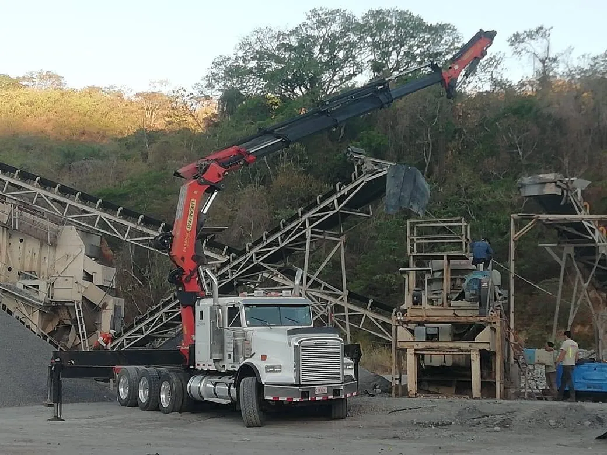

Camión grúa
Transporte con grúa articulada.
Nuestro camión grúa con brazo articulado iza la carga, la pasa sobre muros u obstáculos y la deja exactamente donde la necesita. Servicio en todo Costa Rica.

Cómo trabajamos
Primero el plan, después la maniobra.
Revisamos el sitio
Acceso para el camión, espacio para la maniobra y el punto exacto donde va la carga.
Izamos
El brazo articulado levanta la carga y la pasa sobre muros, tapias u otros obstáculos.
Colocamos
Dejamos la pieza en su lugar, sin equipo adicional.
Ideal para
Cargas que hay que levantar.
- Estructuras de aceroVigas y estructuras para obra.
- Oficinas contenedorColocación en el sitio exacto.
- EsculturasIzaje con eslingas y maniobra planificada.
- Maquinaria y equipoCarga y descarga donde no entra un montacargas.
Equipo que usamos
- Camión grúa con brazo articulado
- Eslingas
- Master Move
Preguntas frecuentes
Lo que más nos preguntan.
¿Qué es un camión con brazo articulado?
Es un camión que lleva una grúa de brazo articulado, también llamada grúa articulada o brazo hidráulico. Sirve para levantar y colocar cargas pesadas sin otro equipo.
¿Pueden pasar la carga sobre un muro?
Sí. El brazo articulado puede levantar la carga sobre muros y tapias para dejarla dentro de un patio o propiedad.
¿Trabajan en todo el país?
Sí, en todo Costa Rica.
¿Tiene algo parecido?
Mándenos fotos de la carga, dónde se recoge y dónde se entrega. Le respondemos con la cotización.